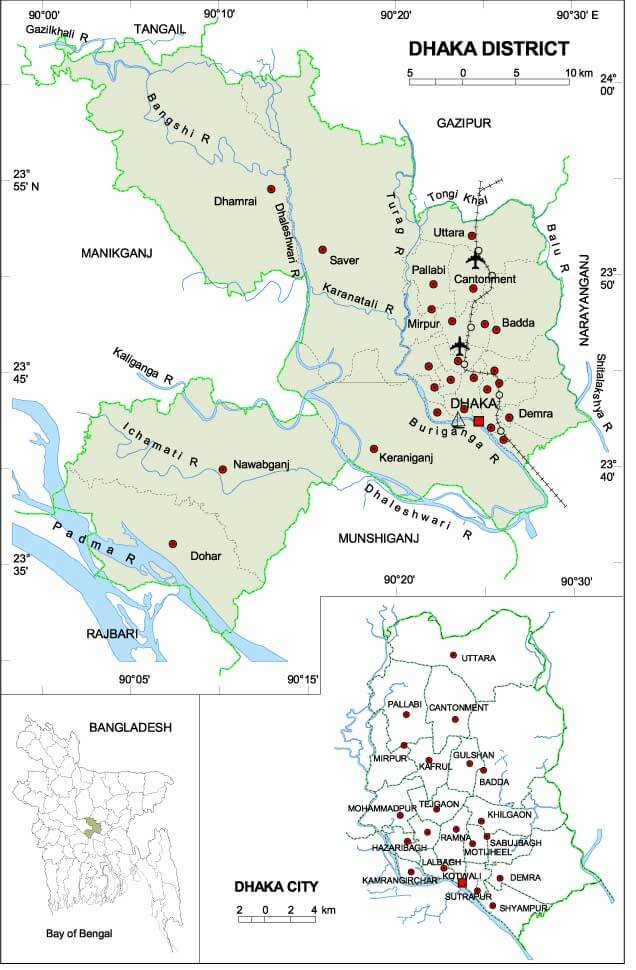

ঢাকা বিভাগ বাংলাদেশ এর আটটি প্রশাসনিক বিভাগের অন্যতম। এটি বাংলাদেশের কেন্দ্রীয় অঞ্চলে অবস্থিত। বর্তমানে ঢাকা ও বরিশাল বিভাগের সাথে সীমান্তবর্তী কোন জেলা নেই ৷ আয়তনে ঢাকা বিভাগের বৃহত্তম জেলা টাঙ্গাইল ৷
বাংলাদেশের রাজধানী ঢাকা মোঘল-পূর্ব যুগে কিছু গুরুত্বধারন করলেও শহরটি ইতিহাসে প্রসিদ্ধি লাভ করে মোঘল যুগে। ঢাকা নামের উৎপত্তি সম্পর্কে স্পষ্ট করে তেমন কিছু জানা যায় না। এ সম্পর্কে প্রচলিত মতগুলোর মধ্যে কয়েকটি নিম্নরূপঃ ক) একসময় এ অঞ্চলে প্রচুর ঢাক গাছ (বুটি ফুডোসা) ছিল; খ) রাজধানী উদ্বোধনের দিনে ইসলাম খানের নির্দেশে এখানে ঢাক অর্থাৎ ড্রাম বাজানো হয়েছিল; গ) ‘ঢাকাভাষা’ নামে একটি প্রাকৃত ভাষা এখানে প্রচলিত ছিল; ঘ) রাজতরঙ্গিণী-তে ঢাক্কা শব্দটি ‘পর্যবেক্ষণ কেন্দ্র’ হিসেবে উল্লেখিত হয়েছে অথবা এলাহাবাদ শিলালিপিতে উল্লেখিত সমুদ্রগুপ্তের পূর্বাঞ্চলীয় রাজ্য ডবাকই হলো ঢাকা। কথিত আছে যে, সেন বংশের রাজা বল্লাল সেন বুড়িগঙ্গা নদীর তীরবর্তী এলাকায় ভ্রমণকালে সন্নিহিত জঙ্গলে হিন্দু দেবী দুর্গার বিগ্রহ খুঁজে পান। দেবী দুর্গার প্রতি শ্রদ্ধাস্বরূপ রাজা বল্লাল সেন ঐ এলাকায় একটি মন্দির প্রতিষ্ঠা করেন। যেহেতু দেবীর বিগ্রহ ঢাকা বা গুপ্ত অবস্থায় পাওয়া গিয়েছিল তাই রাজা মন্দিরের নাম ঢাকেশ্বরী মন্দির। মন্দিরের নাম থেকেই কালক্রমে স্থানটির নাম ঢাকা হিসেবে গড়ে ওঠে।আবার অনেক ঐতিহাসিকদের মতে, মোঘল সম্রাট জাহাঙ্গীর যখন ঢাকাকে সুবা বাংলার রাজধানী হিসেবে ঘোষণা করেন, তখন সুবাদার ইসলাম খান আনন্দের বহিঃপ্রকাশ স্বরূপ শহরে 'ঢাক' বাজানোর নির্দেশ দেন। এই ঢাক বাজানোর কাহিনী লোকমুখে কিংবদন্দির রূপ ধারণ করে এবং তা থেকেই এই শহরের নাম ঢাকা হয়ে যায়। এখানে উল্লেখ্য যে, ১৬১০ খ্রিষ্টাব্দে ইসলাম খান চিশতি সুবাহ বাংলার রাজধানী রাজমহল থেকে ঢাকায় স্থানান্তর করেন এবং সম্রাটের নামানুসারে এর নামকরণ করে জাহাঙ্গীরনগর।
বিখ্যাত খাবার
বাকরখানিবিখ্যাত স্থান
বাহাদুর শাহ পার্কপিকনিক স্পট
ঢাকার আশেপাশে যে সমস্ত পিকনিক স্পট রয়েছে এর মধ্যে মৌচাক, গাজীপুর, ভাওয়াল পুষ্পদাম (পিকনিক স্পট ও শুটিং স্পট, বাঘর বাজার গাজীপুর), রাজেন্দ্রপুর, মধুপুর, শফিপুর, শ্রীপুর, বোটানিক্যাল গার্ডেন, চন্দ্রা, সালনা, কুমিল্লার বার্ড, লালমাই পাহাড়, কোটবাড়ী ইত্যাদি স্থান উল্লেখ্যযোগ্য।বিখ্যাত বস্ত
বেনারসী শাড়ি